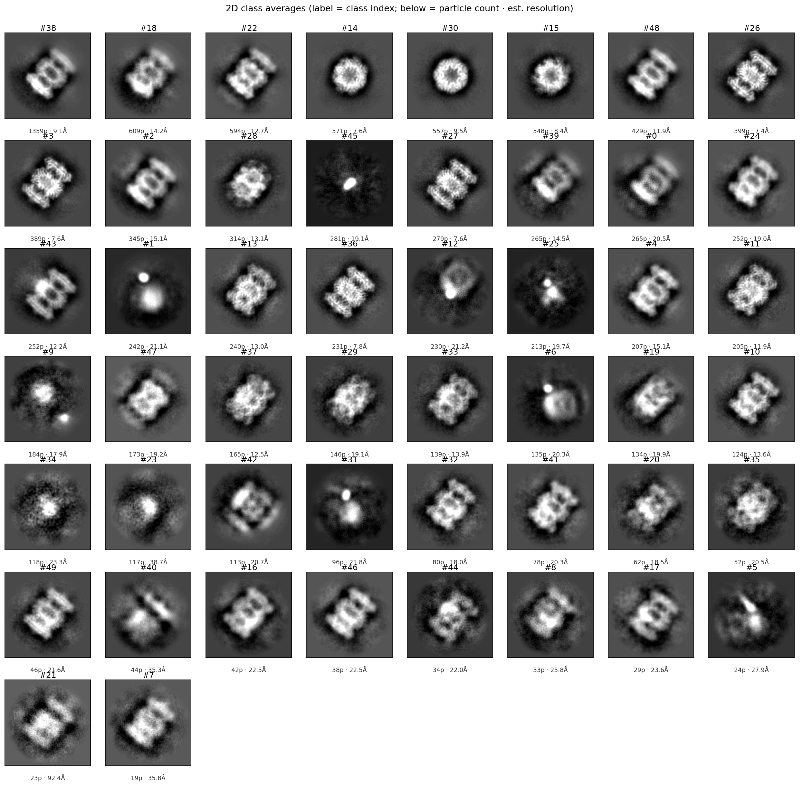
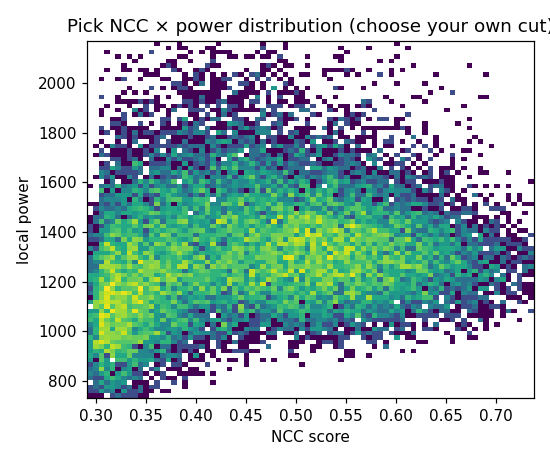

<!doctype html>
<html lang="en">
<head>
<meta charset="utf-8">
<meta name="viewport" content="width=device-width, initial-scale=1">
<title>Grader — cryo-EM env</title>
<link rel="stylesheet" href="assets/site.css">
</head>
<body>
<div class="wrap">
  <aside class="side"><div class="brand">Contents</div><div id="toc"></div></aside>
  <main><article id="doc-out"></article></main>
</div>

<script type="text/markdown" id="doc">
# Grading the reconstruction task

How each cryoSPARC run is graded: subscores and weighted sum

Per-run results for every subscore are on the [benchmark](benchmark.html) page. Design principles are in the [Env spec](rfp.html).

## The two reward families

A run is scored on two families of reward, weighted equally:

- **Outcome** — two halves. **Map quality:** does the reconstruction score well on no-reference, in-domain map metrics — global resolution, local-resolution uniformity, FSC-curve shape, and anisotropy. **Reference consistency:** is the reconstruction consistent with the deposited map — map-to-deposit cross-correlation and map-to-deposit FSC. A mirror-image map can score well on map quality alone yet be the wrong structure, so the family is multiplied by a handedness gate that caps it to zero when the hand is inverted.
- **Procedure** — scores the decisions behind the map, independent of the final resolution, from three subscores. **Trajectory:** did the agent build a complete, correctly-ordered pipeline, and how closely did it follow the expert recipe. **Select-2D:** how many 2-D classes it kept to seed template picking, and how well its keep/reject of classes tracks class quality. **Particle picks:** agreement of the agent's final particle coordinates with the expert reference. A run can reach good resolution off the back of poor decisions, and these are where that shows up.

Each family is built from named subscores, every one a value in **[0, 1]** with a fixed direction (higher = better). The next two sections define them; the last shows the roll-up.

<details class="gsec" open>
<summary><h2>Outcome subscores</h2></summary>

<details class="gsub" open>
<summary><h3>Map quality</h3></summary>

Four axes read from the run's own two half-maps and final volume: the overall resolution, plus three orthogonal views of how that resolution varies — across frequency, across space, and across direction. Each is normalized on a fixed scale between a **floor** (a minimal pipeline run with random interactive decisions on the same movies — no decision skill) and a **ceiling** (an expert's by-hand reconstruction of the same movies — 1.0). Both ends use the same 20-movie subset, so the axis isolates technique, not how much data was available.

| Subscore | Wt | What it is · how it's computed |
|---|---|---|
| **global resolution** | 0.40 | The map's overall resolution. The gold-standard Fourier shell correlation (FSC) between the run's two independently-refined half-maps<sup>1</sup>, read at the 0.143 threshold<sup>2</sup> — recomputed from the half-maps under one fixed loose mask used for every map. Floor-to-ceiling normalized (lower Å = better). |
| **FSC-curve shape** | 0.20 | Signal present across *all* spatial frequencies, not just at the cutoff. The mean of that half-map FSC curve over the resolved band — the area under it, in [0, 1] — rewarding a curve that stays high out to the resolution limit. |
| **local-resolution spread** | 0.20 | How uniform resolution is across the map. A fixed-size window slid over the molecule yields a local half-map FSC resolution at each point<sup>3</sup>; the score is the 5–95th-percentile spread (Å) of those values (tighter = more uniform). |
| **anisotropy (cFAR)** | 0.20 | How directionally even the resolution is. The conical FSC area ratio (cFAR): the half-map FSC integrated within ~100 cones spanning all directions, reduced to the 5th-/95th-percentile cone ratio<sup>4</sup> (1.0 = isotropic). T20S is near-isotropic, so this axis carries little range here. |

<p style="color:var(--muted);font-size:12px;line-height:1.55;margin-top:2px"><strong>Computation references.</strong> <sup>1</sup> Gold-standard FSC from independent half-maps — Scheres &amp; Chen, <em>Nat. Methods</em> 2012. <sup>2</sup> FSC = 0.143 resolution criterion — Rosenthal &amp; Henderson, <em>J. Mol. Biol.</em> 2003. <sup>3</sup> Windowed local-resolution FSC — Cardone, Heymann &amp; Steven, <em>J. Struct. Biol.</em> 2013. <sup>4</sup> Directional (conical) FSC / 3DFSC — Tan et al., <em>Nat. Methods</em> 2017. (FSC-curve shape is a custom summary of the standard FSC curve, with no separate reference.)</p>

</details>

<details class="gsub" open>
<summary><h3>Reference consistency</h3></summary>

Agreement with the deposited EMD-6287 map. These two metrics ask whether the run reconstructed the *same 3-D shape* as the published structure — how closely the run map's density matches the deposit's, both point-for-point in real space (cross-correlation) and shell-by-shell in Fourier space (FSC).

The deposited map is built from the full dataset — 196 movies, ~50,000 particles — and reaches 2.8 Å. The cryoSPARC tutorial, and so every run here, uses a 20-movie subset of that same dataset, which reconstructs to ~3.1 Å. A 20-movie map cannot reach the full-data resolution no matter how good the technique, so each metric is normalized against a **resolution-matched structure** rather than the raw 2.8 Å deposit: the deposit is low-pass filtered down to the run's own resolution — the closest a subset run could come — and the run is scored against that, computed under the same engine as the run.

<figure style="margin:20px 0">
<svg id="d-ceil" viewBox="0 0 760 226" role="img" aria-label="Reference-consistency comparison against a resolution-matched structure" style="max-width:100%;height:auto;display:block">
<style>
#d-ceil text{font-family:system-ui,-apple-system,sans-serif;fill:var(--ink)}
#d-ceil .mut{fill:var(--muted);font-size:11px}#d-ceil .ttl{font-size:12.5px;font-weight:600}
#d-ceil .lbl{fill:var(--muted);font-size:10.5px}
#d-ceil .box{fill:var(--surface);stroke:var(--line-strong);stroke-width:1}
#d-ceil .ln{stroke:var(--line-strong);stroke-width:1.4;fill:none}#d-ceil .acc{fill:var(--accent)}
</style>
<defs><marker id="mceil" markerWidth="9" markerHeight="9" refX="7" refY="3" orient="auto"><path d="M0,0 L7,3 L0,6 z" style="fill:var(--line-strong)"/></marker></defs>
<rect class="box" x="16" y="24" width="168" height="52" rx="11"/>
<text class="ttl" x="100" y="48" text-anchor="middle">Deposit EMD-6287</text><text class="mut" x="100" y="65" text-anchor="middle">full data · 2.8 Å · held out</text>
<line class="ln" x1="184" y1="50" x2="266" y2="50" marker-end="url(#mceil)"/><text class="lbl" x="225" y="44" text-anchor="middle">low-pass → run res</text>
<rect class="box" x="270" y="24" width="190" height="52" rx="11"/><text class="ttl" x="365" y="48" text-anchor="middle">resolution-matched</text><text class="ttl" x="365" y="65" text-anchor="middle">structure</text>
<rect class="box" x="16" y="150" width="168" height="52" rx="11"/><text class="ttl" x="100" y="181" text-anchor="middle">Agent</text>
<line class="ln" x1="184" y1="176" x2="266" y2="176" marker-end="url(#mceil)"/>
<rect class="box" x="270" y="150" width="190" height="52" rx="11"/><text class="ttl" x="365" y="174" text-anchor="middle">3-D reconstruction</text><text class="mut" x="365" y="191" text-anchor="middle">the run's map · ~3.1 Å</text>
<line class="ln" x1="460" y1="56" x2="582" y2="114" marker-end="url(#mceil)"/>
<line class="ln" x1="460" y1="170" x2="582" y2="138" marker-end="url(#mceil)"/>
<text class="lbl" x="520" y="78" text-anchor="middle">cross-correlation</text>
<text class="lbl" x="520" y="170" text-anchor="middle">FSC@0.5</text>
<rect x="584" y="98" width="160" height="56" rx="11" style="fill:var(--accent-soft);stroke:var(--accent)"/><text class="ttl acc" x="664" y="121" text-anchor="middle">Similarity score</text><text class="mut" x="664" y="139" text-anchor="middle">= reference consistency</text>
</svg>
<figcaption style="color:var(--muted);font-size:13px;margin-top:6px">The run's map and the deposit — low-passed to the run's resolution — are compared by cross-correlation and FSC; each metric is normalized to that resolution-matched structure, the best a 20-movie subset could match.</figcaption>
</figure>

| Subscore | Wt | What it is · how it's computed |
|---|---|---|
| **map–map CC** | 0.50 | Real-space cross-correlation between the run map and the deposited map, after rigid-body placing the run map into the deposit's frame under a fixed hand convention. Normalized to the resolution-matched structure. |
| **map–map FSC@0.5** | 0.50 | The resolution (Å) at which the Fourier shell correlation between the run map and the deposited map<sup>5</sup> falls through 0.5 — the frequency where the two maps stop agreeing. Normalized to the resolution-matched structure (lower Å = better). |

<p style="color:var(--muted);font-size:12px;line-height:1.55;margin-top:2px"><strong>Computation reference.</strong> <sup>5</sup> Fourier shell correlation between two maps, 0.5 criterion — Harauz &amp; van Heel, <em>Optik</em> 1986; van Heel &amp; Schatz, <em>J. Struct. Biol.</em> 2005.</p>

</details>

<details class="gsub" open>
<summary><h3>The handedness gate</h3></summary>

Cryo-EM maps have an intrinsic hand; a mirror-image (enantiomer) map can have excellent resolution and internal consistency yet be the wrong structure. The gate aligns both the run map and its mirror to the reference: if the mirror fits clearly better, the outcome family is multiplied by **0**; an ambiguous case is capped at 0.6; a clear right hand passes at 1.0.

<figure style="margin:20px 0">
<svg id="d-gate" viewBox="0 0 760 188" role="img" aria-label="The handedness gate" style="max-width:100%;height:auto;display:block">
<style>
#d-gate text{font-family:system-ui,-apple-system,sans-serif;fill:var(--ink)}
#d-gate .mut{fill:var(--muted);font-size:11px}#d-gate .ttl{font-size:12.5px;font-weight:600}
#d-gate .box{fill:var(--surface);stroke:var(--line-strong);stroke-width:1}
#d-gate .ln{stroke:var(--line-strong);stroke-width:1.4;fill:none}
#d-gate .ok{fill:var(--ok-ink)}#d-gate .warn{fill:var(--warn-ink)}#d-gate .bad{fill:var(--gap-ink)}
</style>
<defs><marker id="mgate" markerWidth="9" markerHeight="9" refX="7" refY="3" orient="auto"><path d="M0,0 L7,3 L0,6 z" style="fill:var(--line-strong)"/></marker></defs>
<rect class="box" x="20" y="60" width="212" height="60" rx="11"/>
<text class="ttl" x="126" y="86" text-anchor="middle">map vs mirror</text><text class="mut" x="126" y="104" text-anchor="middle">which aligns better to the reference</text>
<line class="ln" x1="232" y1="90" x2="306" y2="90" marker-end="url(#mgate)"/>
<rect x="308" y="16" width="194" height="38" rx="10" style="fill:var(--gap-bg);stroke:var(--gap-ink)"/><text class="bad" x="405" y="40" text-anchor="middle">mirror fits clearly better → ×0.0</text>
<rect x="308" y="70" width="194" height="38" rx="10" style="fill:var(--warn-bg);stroke:var(--warn-ink)"/><text class="warn" x="405" y="94" text-anchor="middle">ambiguous → ×0.6</text>
<rect x="308" y="124" width="194" height="38" rx="10" style="fill:var(--ok-bg);stroke:var(--ok-ink)"/><text class="ok" x="405" y="148" text-anchor="middle">right hand → ×1.0</text>
<line class="ln" x1="502" y1="35" x2="566" y2="84" marker-end="url(#mgate)"/><line class="ln" x1="502" y1="89" x2="566" y2="89" marker-end="url(#mgate)"/><line class="ln" x1="502" y1="143" x2="566" y2="94" marker-end="url(#mgate)"/>
<rect x="568" y="68" width="174" height="44" rx="11" style="fill:none;stroke:var(--outcome)"/><text class="ttl" x="655" y="88" text-anchor="middle" style="fill:var(--outcome)">× outcome block</text><text class="mut" x="655" y="105" text-anchor="middle">a wrong hand caps it to 0</text>
</svg>
<figcaption style="color:var(--muted);font-size:13px;margin-top:6px">A clear right hand — the map fitting the reference far better than its mirror — passes at 1.0; a mirror-image map collapses the outcome family to 0.</figcaption>
</figure>

</details>

</details>

<details class="gsec" open>
<summary><h2>Procedure subscores</h2></summary>

The procedure subscores capture the correctness of the *process*, and can award partial credit for a sound process that reached a poor result. For the cryoSPARC workflow this splits into the quality of the overall **trajectory** and the quality of the agent's **execution of the interactive jobs**. The trajectory grade is itself split into the **completeness** of the trajectory and its **similarity to the golden path**; because several distinct trajectories can reach a good reconstruction through sound procedure, completeness is weighted above similarity to the reference.

Interactive jobs require decision-making from the agent — often iterative, and from visual input. For T20S (and essentially every cryo-EM workflow) the interactive jobs are picking individual particles out of the micrographs and selecting 2-D class averages. Several ML implementations of these steps exist, usually built on vision models, so these subscores are weighted lower. A refined version would isolate the quality of the iterative decision-making from the quality of the visual reasoning; for now we simply measure overall performance on each interactive job.

| Subscore | Wt | What it is · how it's computed |
|---|---|---|
| **trajectory** | 0.50 | *Completeness* (0.70): is the job graph the agent built and ran a complete, correctly-ordered pipeline? Every job maps to a logical capability (any picker → "pick", any refinement → "refine-3D"), so a different-but-valid pipeline passes; scored as a hard gate (a completed 3-D refinement reachable from import must exist) × (0.7 · capability coverage + 0.3 · ordering).<br>*Reference similarity* (0.30): how closely the agent's set of jobs matched the tutorial recipe — the one place we compare against the literal reference tree. |
| **select-2D** | 0.25 | *Templates* (0.50): how many 2-D classes the agent kept to seed template picking (the tutorial keeps ~2; banded on distance from 2), times the quality of those kept classes scored by a 2-D class-quality model (CryoSift<sup>6</sup>).<br>*Refine* (0.50): how well the agent's keep/reject of classes for the refinement input tracks that same model — F1 of the agent's split against the model's good/bad call. |
| **particle picks** | 0.25 | F2 agreement<sup>7</sup> between the agent's final particle coordinates and the golden coordinates on the same micrographs (recall-weighted, the cryo-EM convention). |

<p style="color:var(--muted);font-size:12px;line-height:1.55;margin-top:2px"><strong>Computation references.</strong> <sup>6</sup> CryoSift — a CNN that scores cryo-EM 2-D class-average quality — Schäfer et al., <em>Acta Cryst. F</em> 2025. <sup>7</sup> F-measure, recall-weighted (β = 2) — van Rijsbergen, <em>Information Retrieval</em> 1979.</p>

All three procedure subscores are computed for the agent runs; a subscore with no data drops out and its siblings absorb its weight, so a not-yet-computed metric never earns fabricated credit.

### Subscore details

How each procedural subscore is computed, with a worked example. Expand a subscore for the mechanics and the agent's actual inputs.

<details class="gdet">
<summary><h4>Trajectory — completeness + reference similarity</h4></summary>

A cryo-EM reconstruction is a directed graph of processing jobs. **Completeness** asks whether the agent's graph is a *valid and sufficient* reconstruction, independent of matching any particular recipe. Every job is mapped to one of nine logical capabilities a single-particle reconstruction must cover — import, motion correction, CTF estimation, particle picking, extraction, 2-D classification, class curation, initial 3-D model, and 3-D refinement. The score is a hard gate (a *completed* 3-D refinement must be reachable from the imported movies — no credit for a graph that never yields a 3-D map) times `0.7·(capabilities covered / 9) + 0.3·(ordering constraints satisfied)`. Mapping to capabilities rather than exact job types lets a different-but-valid pipeline (say, a different picker) score full marks.

**Reference similarity** is the one place we compare to the literal tutorial recipe: the multiset overlap (Jaccard) of the agent's job types against the tutorial's, `1 − (extra + missing) / union`. A legitimately different pipeline scores below 1 here by design — completeness, weighted higher, is what protects it.

*Example.* A run that imports movies → corrects motion → estimates CTF → picks → extracts → classifies in 2-D → curates → builds an ab-initio model → refines covers all nine capabilities in a valid order → completeness **1.0**. If it skipped a couple of optional denoise/junk-removal jobs the tutorial used, those count as "missing" in the Jaccard overlap and pull reference similarity below 1.0, while completeness stays 1.0 (optional polish is never required).

</details>

<details class="gdet">
<summary><h4>Select-2D — count, class quality, and selection alignment</h4></summary>

After particles are grouped into **2-D class averages** — denoised composite images of the particle seen from one orientation — the agent decides which classes to keep, twice: a tight set (~2 of ~50) to seed an automated template-based particle picker, and a broader set to pass into 3-D refinement. Keeping junk classes injects noise; discarding good ones throws away signal.

**Templates** = a count band (target ≈ 2; the score falls off with |n − 2|) times the quality of the kept classes. Quality comes from **CryoSift**, a published CNN that rates each 2-D class from 1 (best) to 5 (worst); the quality factor is `(5 − mean CryoSift of kept) / 4`, so a right-count but junk selection is still down-weighted.

**Refine** = how well the agent's keep/reject split for the refinement input tracks CryoSift's good (< 3.5) / bad call, scored as F1 — the harmonic mean of precision (kept classes that are good) and recall (good classes that were kept).

<figure style="margin:16px 0">

<figcaption style="color:var(--muted);font-size:13px;margin-top:6px">2-D class averages the agent chooses among — each labelled with its particle count and estimated resolution.</figcaption>
</figure>

*Example.* From class averages like these, keeping the two sharpest, highest-population classes → count score **1.0**; if their mean CryoSift score is 1.9, the quality factor is (5 − 1.9)/4 = **0.78**, so templates = 1.0 × 0.78 = 0.78. A broader refine selection that keeps the CryoSift-good classes and drops the blurred ones scores F1 ≈ **0.95**. Over-selecting — keeping a dozen or more template classes instead of ~2 — drives the count score toward 0 on the ladder below.

<figure style="margin:18px 0">
<svg id="d-band" viewBox="0 0 760 150" role="img" aria-label="The Select-2D template count band ladder" style="max-width:100%;height:auto;display:block">
<style>
#d-band text{font-family:system-ui,-apple-system,sans-serif;fill:var(--ink)}
#d-band .mut{fill:var(--muted);font-size:11px}#d-band .sc{font-size:15px;font-weight:600}#d-band .dev{font-size:11px;fill:var(--muted)}
</style>
<text class="mut" x="24" y="20">Select-2D templates — score by |count − 2|</text>
<rect x="24" y="34" width="116" height="46" rx="8" style="fill:var(--ok-bg)"/><text class="dev" x="82" y="52" text-anchor="middle">dev 0</text><text class="sc" x="82" y="73" text-anchor="middle" style="fill:var(--ok-ink)">1.0</text>
<rect x="146" y="34" width="116" height="46" rx="8" style="fill:var(--ok-bg);opacity:0.72"/><text class="dev" x="204" y="52" text-anchor="middle">≤ 1</text><text class="sc" x="204" y="73" text-anchor="middle" style="fill:var(--ok-ink)">0.85</text>
<rect x="268" y="34" width="116" height="46" rx="8" style="fill:var(--warn-bg);opacity:0.7"/><text class="dev" x="326" y="52" text-anchor="middle">≤ 3</text><text class="sc" x="326" y="73" text-anchor="middle" style="fill:var(--warn-ink)">0.55</text>
<rect x="390" y="34" width="116" height="46" rx="8" style="fill:var(--warn-bg)"/><text class="dev" x="448" y="52" text-anchor="middle">≤ 6</text><text class="sc" x="448" y="73" text-anchor="middle" style="fill:var(--warn-ink)">0.30</text>
<rect x="512" y="34" width="116" height="46" rx="8" style="fill:var(--gap-bg);opacity:0.7"/><text class="dev" x="570" y="52" text-anchor="middle">≤ 11</text><text class="sc" x="570" y="73" text-anchor="middle" style="fill:var(--gap-ink)">0.12</text>
<rect x="634" y="34" width="102" height="46" rx="8" style="fill:var(--gap-bg)"/><text class="dev" x="685" y="52" text-anchor="middle">&gt; 11</text><text class="sc" x="685" y="73" text-anchor="middle" style="fill:var(--gap-ink)">0.0</text>
<text class="mut" x="24" y="106">Target n ≈ 2 — one kept class per dominant view; the score falls off with |n − 2|.</text>
<text class="mut" x="24" y="132">Templates only; the refine pass scores class quality, not this ladder.</text>
</svg>
<figcaption style="color:var(--muted);font-size:13px;margin-top:6px">The template count ladder: top weight within select-2D, steep — over-selecting 2-D templates is a high-signal error that resolution misses.</figcaption>
</figure>

</details>

<details class="gdet">
<summary><h4>Particle picks — F2 against expert coordinates</h4></summary>

**Picking** is locating individual particle images within each noisy micrograph — the raw input to everything downstream. Because every run picks from the *same* 20 micrographs, the agent's final coordinates are compared directly to expert ("golden") coordinates.

The score is **F2** — the recall-weighted F-measure `5PR / (4P + R)` — of the agent's coordinates against the golden set, counting a pick as matched when it falls within a small radius of a golden particle. Recall is weighted above precision (β = 2) because a missed real particle is the costlier error here: downstream curation removes most false positives, but a particle never picked is gone. F2 saturates near the top, so it separates a bad cut (too tight, losing real particles; or too loose, admitting ice and carbon) from a reasonable one without splitting hairs among good ones.

<figure style="margin:16px 0">

<figcaption style="color:var(--muted);font-size:13px;margin-top:6px">The pick-quality distribution (cross-correlation score vs local power) the agent thresholds to separate true particles from ice and junk.</figcaption>
</figure>

*Example.* The agent sets a threshold on this plot to separate true particles from ice and junk. A cut that recovers most golden particles with few false positives — say precision 0.84, recall 0.91 — gives F2 = 5(0.84)(0.91) / (4·0.84 + 0.91) ≈ **0.90**.

</details>

</details>

## Combining the subscores into one score

Each subscore is a value in [0, 1]. Within a family, subscores combine into a weighted average; a subscore with no data drops out and its siblings absorb its weight, so a not-yet-computed metric never silently scores zero or full credit. Outcome's two halves (map quality and reference consistency) average 50/50 and are then multiplied by the handedness gate. The two families average 50/50 to give the run's total.

<figure style="margin:22px 0">
<svg id="d-tree" viewBox="0 0 850 430" role="img" aria-label="The full scoring tree: nine subscores combine by weight into outcome and procedure, then into the final score" style="max-width:100%;height:auto;display:block">
<style>
#d-tree text{font-family:system-ui,-apple-system,sans-serif;fill:var(--ink)}
#d-tree .bl{font-size:11px;font-weight:600}
#d-tree .sub{font-size:9px;fill:var(--muted)}
#d-tree .w{fill:var(--muted);font-size:10px}
#d-tree .box{fill:var(--surface);stroke:var(--line-strong);stroke-width:1}
#d-tree .ln{stroke:var(--line-strong);stroke-width:1.1;fill:none}
</style>
<defs><marker id="mtree" markerWidth="8" markerHeight="8" refX="6.5" refY="3" orient="auto"><path d="M0,0 L6.5,3 L0,6 z" style="fill:var(--line-strong)"/></marker></defs>
<line class="ln" x1="170" y1="42" x2="230" y2="108" marker-end="url(#mtree)"/>
<line class="ln" x1="170" y1="86" x2="230" y2="108" marker-end="url(#mtree)"/>
<line class="ln" x1="170" y1="130" x2="230" y2="108" marker-end="url(#mtree)"/>
<line class="ln" x1="170" y1="174" x2="230" y2="108" marker-end="url(#mtree)"/>
<line class="ln" x1="170" y1="218" x2="230" y2="240" marker-end="url(#mtree)"/>
<line class="ln" x1="170" y1="262" x2="230" y2="240" marker-end="url(#mtree)"/>
<line class="ln" x1="170" y1="306" x2="230" y2="350" marker-end="url(#mtree)"/>
<line class="ln" x1="170" y1="350" x2="230" y2="350" marker-end="url(#mtree)"/>
<line class="ln" x1="170" y1="394" x2="230" y2="350" marker-end="url(#mtree)"/>
<text class="w" x="200" y="70" text-anchor="middle">0.4</text>
<text class="w" x="200" y="92" text-anchor="middle">0.2</text>
<text class="w" x="200" y="114" text-anchor="middle">0.2</text>
<text class="w" x="200" y="136" text-anchor="middle">0.2</text>
<text class="w" x="200" y="223" text-anchor="middle">0.5</text>
<text class="w" x="200" y="247" text-anchor="middle">0.5</text>
<text class="w" x="200" y="322" text-anchor="middle">0.5</text>
<text class="w" x="200" y="343" text-anchor="middle">0.25</text>
<text class="w" x="200" y="368" text-anchor="middle">0.25</text>
<line class="ln" x1="372" y1="108" x2="446" y2="172" marker-end="url(#mtree)"/>
<line class="ln" x1="372" y1="240" x2="446" y2="176" marker-end="url(#mtree)"/>
<line class="ln" x1="372" y1="350" x2="446" y2="350" marker-end="url(#mtree)"/>
<text class="w" x="405" y="136" text-anchor="middle">0.5</text>
<text class="w" x="405" y="205" text-anchor="middle">0.5</text>
<line class="ln" x1="580" y1="174" x2="670" y2="258" marker-end="url(#mtree)"/>
<line class="ln" x1="580" y1="350" x2="670" y2="266" marker-end="url(#mtree)"/>
<text class="w" x="624" y="210" text-anchor="middle">0.5</text>
<text class="w" x="624" y="300" text-anchor="middle">0.5</text>
<rect class="box" x="20" y="28" width="150" height="28" rx="8"/><rect x="20" y="28" width="5" height="28" rx="2.5" style="fill:var(--outcome)"/><text class="bl" x="99" y="46" text-anchor="middle">Global resolution</text>
<rect class="box" x="20" y="72" width="150" height="28" rx="8"/><rect x="20" y="72" width="5" height="28" rx="2.5" style="fill:var(--outcome)"/><text class="bl" x="99" y="90" text-anchor="middle">FSC-curve shape</text>
<rect class="box" x="20" y="116" width="150" height="28" rx="8"/><rect x="20" y="116" width="5" height="28" rx="2.5" style="fill:var(--outcome)"/><text class="bl" x="99" y="134" text-anchor="middle">Local resolution</text>
<rect class="box" x="20" y="160" width="150" height="28" rx="8"/><rect x="20" y="160" width="5" height="28" rx="2.5" style="fill:var(--outcome)"/><text class="bl" x="99" y="178" text-anchor="middle">Anisotropy (cFAR)</text>
<rect class="box" x="20" y="204" width="150" height="28" rx="8"/><rect x="20" y="204" width="5" height="28" rx="2.5" style="fill:var(--outcome)"/><text class="bl" x="99" y="222" text-anchor="middle">Map–EMDB CC</text>
<rect class="box" x="20" y="248" width="150" height="28" rx="8"/><rect x="20" y="248" width="5" height="28" rx="2.5" style="fill:var(--outcome)"/><text class="bl" x="99" y="266" text-anchor="middle">Map–EMDB FSC</text>
<rect class="box" x="20" y="292" width="150" height="28" rx="8"/><rect x="20" y="292" width="5" height="28" rx="2.5" style="fill:var(--procedure)"/><text class="bl" x="99" y="310" text-anchor="middle">Trajectory</text>
<rect class="box" x="20" y="336" width="150" height="28" rx="8"/><rect x="20" y="336" width="5" height="28" rx="2.5" style="fill:var(--procedure)"/><text class="bl" x="99" y="354" text-anchor="middle">Select-2D</text>
<rect class="box" x="20" y="380" width="150" height="28" rx="8"/><rect x="20" y="380" width="5" height="28" rx="2.5" style="fill:var(--procedure)"/><text class="bl" x="99" y="398" text-anchor="middle">Particle picks</text>
<rect class="box" x="232" y="92" width="140" height="32" rx="8"/><rect x="232" y="92" width="5" height="32" rx="2.5" style="fill:var(--outcome)"/><text class="bl" x="304" y="112" text-anchor="middle">Map quality</text>
<rect class="box" x="232" y="223" width="140" height="34" rx="8"/><rect x="232" y="223" width="5" height="34" rx="2.5" style="fill:var(--outcome)"/><text class="bl" x="305" y="237" text-anchor="middle">Reference</text><text class="bl" x="305" y="250" text-anchor="middle">consistency</text>
<rect class="box" x="232" y="334" width="140" height="32" rx="8"/><rect x="232" y="334" width="5" height="32" rx="2.5" style="fill:var(--procedure)"/><text class="bl" x="304" y="354" text-anchor="middle">Procedure</text>
<rect class="box" x="448" y="154" width="132" height="40" rx="8"/><rect x="448" y="154" width="5" height="40" rx="2.5" style="fill:var(--outcome)"/><text class="bl" x="517" y="172" text-anchor="middle">Outcome</text><text class="sub" x="517" y="186" text-anchor="middle">× handedness gate</text>
<rect class="box" x="448" y="334" width="132" height="32" rx="8"/><rect x="448" y="334" width="5" height="32" rx="2.5" style="fill:var(--procedure)"/><text class="bl" x="517" y="354" text-anchor="middle">Procedure</text>
<rect class="box" x="672" y="242" width="156" height="40" rx="9" style="fill:var(--accent-soft);stroke:var(--accent)"/><text class="bl" x="750" y="266" text-anchor="middle" style="fill:var(--accent)">Final score</text>
</svg>
<figcaption style="color:var(--muted);font-size:13px;margin-top:6px">The full scoring tree. Nine subscores combine by weight into map quality, reference consistency, and procedure; map quality and reference consistency (then × the handedness gate) make outcome; outcome and procedure combine 50/50 into the final score.</figcaption>
</figure>
</script>

<script src="https://cdn.jsdelivr.net/npm/marked@12.0.2/marked.min.js"></script>
<script src="assets/site.js"></script>
<script>
  Site.renderDoc({
    meta: '<div class="docmeta">'
      + '<span class="tag draft">working draft</span>'
      + '<span class="tag stage">T20S MVP · public data</span>'
      + '<span class="tag dot">weights provisional · calibration pending</span>'
      + '<span class="tag dot">snapshot 2026-06-25</span></div>'
  });
  Site.nav('grader');
</script>
</body>
</html>
